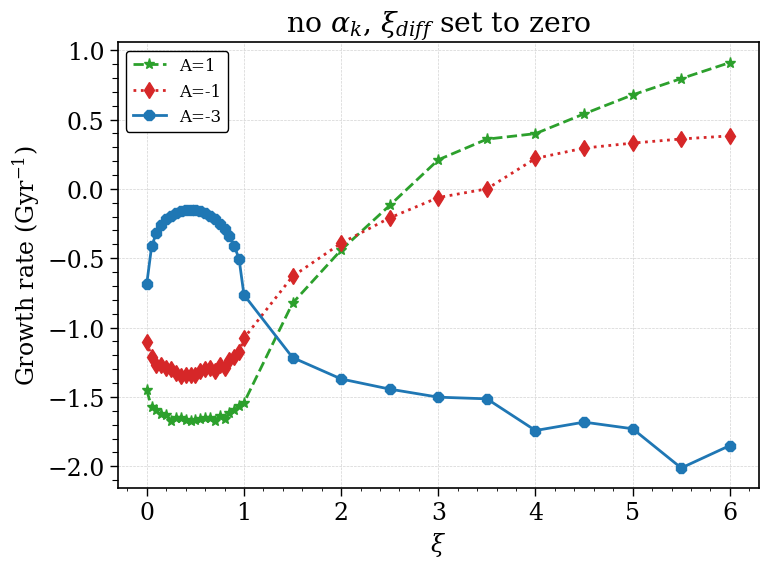
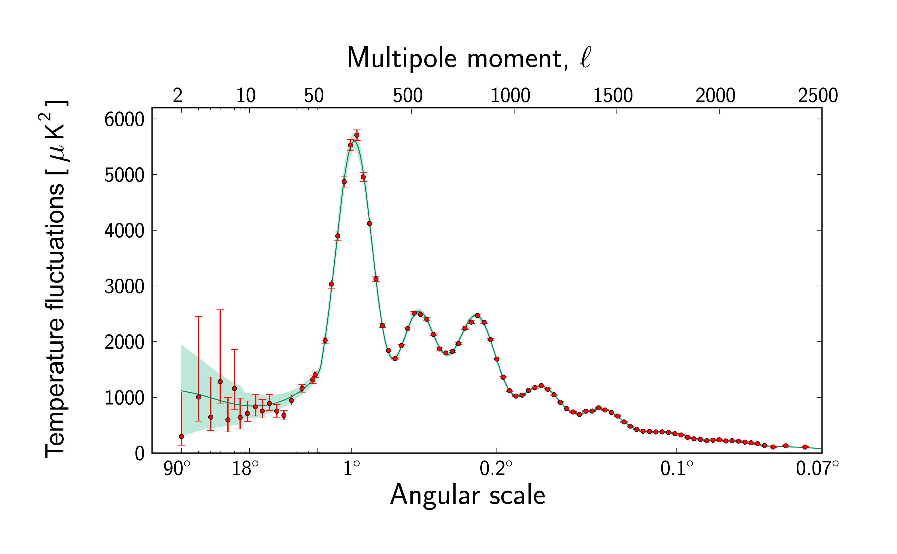
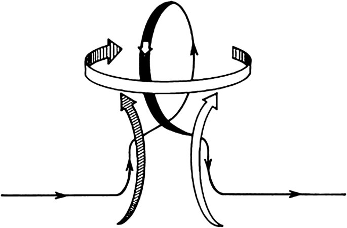

My PhD research, which I began in March 2026, focuses on simulating active galactic nuclei (AGN) jets in cosmological galaxy cluster environments. I study how AGN jet feedback regulates the thermodynamic properties of cluster cores, in particular the emergence of cool-core and non-cool-core systems.
This work builds on recent developments in self-regulated AGN jet models and extends them to cosmological simulations, with the aim of understanding how small-scale jet physics couples to large-scale structure evolution. It is part of the DFG Research Unit FOR 5195 on relativistic AGN jets.
This is an ongoing project, and this section will be expanded as the work develops.

The thesis is titled "Role of the Vishniac Magnetic Helicity Flux in Mean-field Galactic Dynamos". It is done under the supervision of Dr. Luke Chamandy. I study the effect of a new magnetic helicity flux called the vishniac flux on dynamo action, focussing on the non-linear regime. This work is an extension of Kishore Gopalkrishnan and Kandaswamy Subramanian (2023) on magnetic helicity fluxes. I independently developed the dynamo simulation using FORTRAN.

This was part of my advanced computational physics term paper. I studied about CMB data analysis techniques, and used Minkowski functionals to find slight non-gaussianity in WMAP data. HEALPix was used for analysing the data set and codes are written in PYTHON. The analytic expressions for the functionals were also verified by doing 1000 simulations of synthetic data and statistical analysis. This was done under the supervision of Dr. Tuhin Ghosh.

This was part of my Magnetohydrodynamics and plasma physics term paper, done under the supervision of Dr. Luke Chamandy. I simulated the mean field α−ω dynamo, one dimensional in r. The results with and without outflows were compared. This project focussed on the kinematic regime. The codes are written in PYTHON.
I didn't start with a dream of becoming an astrophysicist. My first real exposure in this field was a research fellowship on neutron star MHD during my early bachelor's, and that got me hooked. Since then, a slow accumulation of projects and coursework made it clear that this is what I want to do. My MSc thesis, on modeling galactic magnetic fields using mean-field dynamo theory, has deepened my interest in theoretical and computational astrophysics. What keeps me here is the process: uncertain derivations that click, messy implementations, debugging (have a mild love-hate relationship with this part), and the quiet satisfaction of a well-behaved simulation.
I code in Python and Fortran for my research projects, and occassionally toy with web design using HTML and CSS, just enough to keep this site looking sharp! For a behind-the-scenes look at my work and projects, visit my GitHub. I enjoy coding and am always looking to expand my toolkit. I also have some experience with C++, picked up during my undergraduate coursework.
When I'm not working on my projects, I'm usually reading. I'm planning to add a book review blog to this website (See Here). I read mostly translated classics, and my favorite author (at the moment) is Dostoevsky, though this changes at an alarmingly often. Lately, I've been trying to learn German by reading Rainer Maria Rilke in both the original and in translation, side by side. It is slow and occasionally maddening, currently it is my way of filling spare corners of time.
I find it difficult to pass a day without documenting it, no matter how plain or mundane (blame the unshakable grip Sylvia Plath and Franz Kafka have on me). I archive almost everything, debugging logs, diaries, media reviews. I sketch, doodle, or write to reflect on the day. It helps me organize my thoughts without relying on memory to reconstruct how things actually worked. Between research, reading, and compulsive journaling, I rarely have time to spiral, which is, in some sense, the point of having too many outlets.
All that is gold does not glitter,
Not all those who wander are lost;
The old that is strong does not wither,
Deep roots are not reached by the frost.